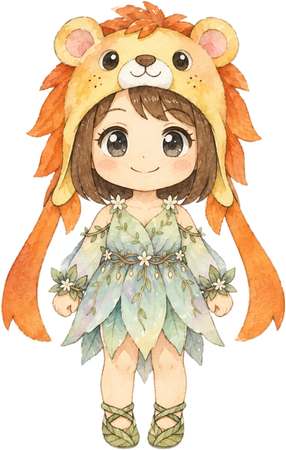

※ 数字はすべて練習用の架空データです（実際の発表値ではありません）

経済指標の結果を見て、中央銀行（FRB・日銀）の立場になって考えます。
「予想より強い／高い」結果が出たら、金利はどちらに動きたい？
タカ派＝金利を上げたい（利上げ寄り）
🕊️ ハト派＝金利を下げたい（利下げ寄り）
※ 学習用のゲームです。出てくる数字や発言の例文は架空で、投資の助言ではありません。指標の見方は一般的な目安で、例外もあります。投資の判断はご自身の責任でお願いします。
あなたが中央銀行なら、どちら派？